SiteSafe Inspect
เพิ่มความจุ 8.0 เท่า ป้องกันเครื่องล่ม 0.00% และผ่านชุดทดสอบครบ 27 ข้อresults/lb/summary.json · test/evidence/
ปัญหาลูกค้า: ตรวจรูป 300+ ใบต่อวันด้วยตา หลุดคนไม่ใส่หมวกและทำรายงานไม่ทัน 18:00 น.
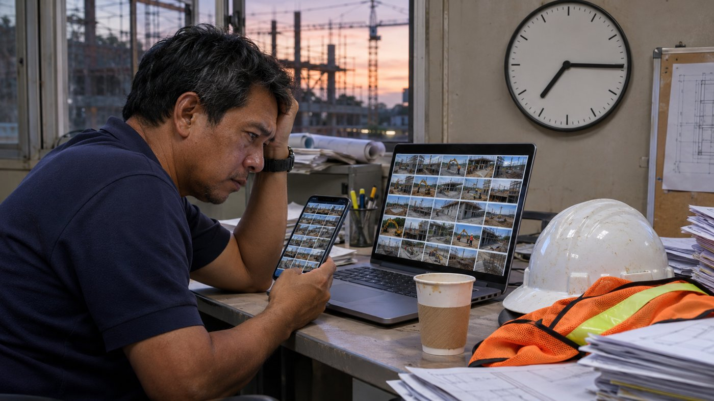
เส้นทางวิศวกรรม 4 ระยะ: จากบทสัมภาษณ์สู่ระบบจริงบน 2× RTX 4090 และ Playwright 27 ข้อ
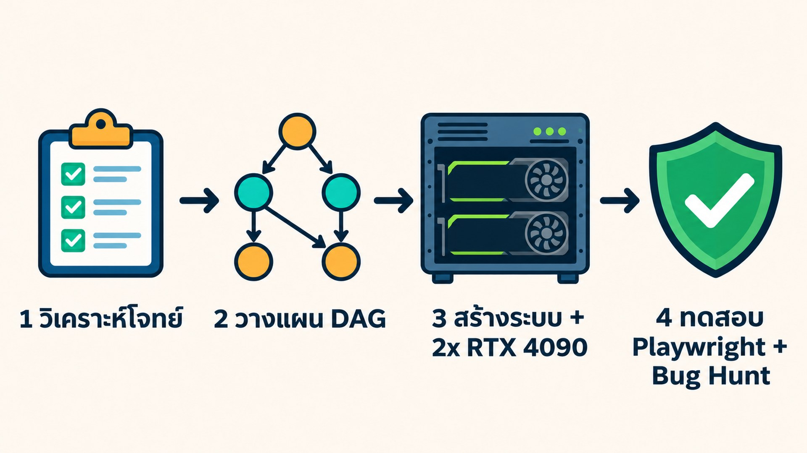
yolo2, yolo3, cyolo1)least_conn + 8× FastAPI.gif ทุกข้อ ยืนยันจับบัก 3/3 แล้วลบเครื่อง GPU ทันทีผู้ใช้ทั้ง 3 บทบาทมีขอบเขตสิทธิ์และหน้าจอที่ต่างกันชัดเจนINTERVIEW.md


หน้างานจริงมีทั้งมุมกล้องซับซ้อนและช่วงเร่งด่วนที่รูปเข้าพร้อมกันจำนวนมากINTERVIEW.md
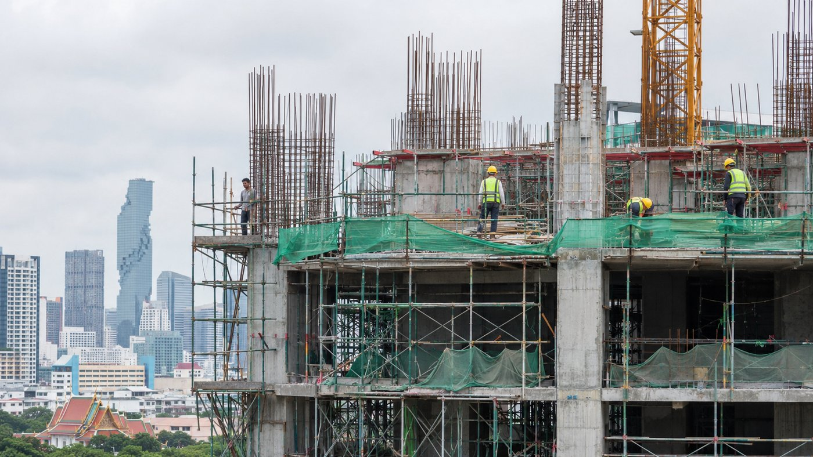
บทสัมภาษณ์กำหนดเส้นแบ่งชัดเจนว่าอะไรต้องทำในรุ่นแรกและอะไรตัดออกก่อน
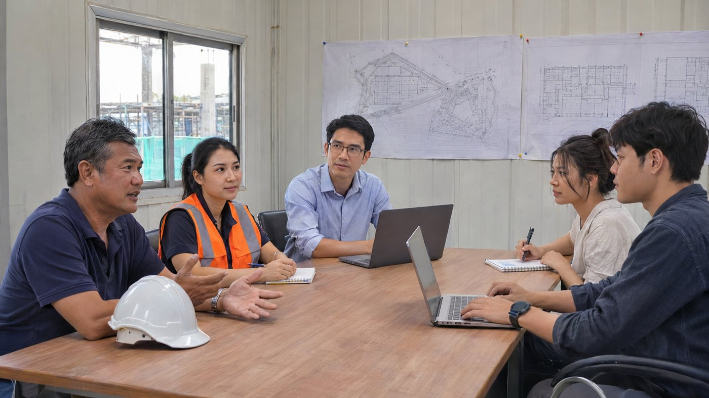
NO_HARDHAT / NO_VEST พร้อมวาดกรอบ, แก้ผลแบบเก็บประวัติลบไม่ได้, รายงานรายวัน และ /telemetryวิเคราะห์โจทย์ กติกา 7 ข้อ และสถาปัตยกรรม Design #4
พรอมต์ · พรอมต์ที่ 1 · แปลงบทสัมภาษณ์เป็น docs/USER-STORIES.mdCopy & Paste
docs/USER-STORIES.md จากบทสัมภาษณ์พรอมต์ทั้งหมด 6 บรรทัดอ่าน INTERVIEW.md ของบริษัท ไทยมั่นคงก่อสร้าง จำกัด ให้ครบทุกข้อ
แล้วสร้างไฟล์ docs/USER-STORIES.md ที่ประกอบด้วย:
1. บทบาทผู้ใช้ทั้ง 3 กลุ่ม (หัวหน้างานไซต์, ผู้จัดการความปลอดภัย, ผู้บริหาร) และขอบเขตสิทธิ์ของแต่ละกลุ่ม
2. User Stories ครบทุกเส้นทางงานหลัก: อัปโหลดรูปหน้างานเป็นชุด, ตรวจจับคนไม่ใส่หมวก (H) และไม่ใส่เสื้อสะท้อนแสง (V) พร้อมวาดกรอบ, กรองดูรูปที่มีปัญหา, แก้ผลตรวจพร้อมบันทึกเหตุผลแบบลบไม่ได้, ดูรายงานประจำวันรายไซต์, และดูแดชบอร์ดสถานะเครื่อง GPU
3. Acceptance Criteria แบบ Given / When / Then ที่วัดผลได้จริงในทุก Story
4. แยกรายการที่อยู่นอกขอบเขตรุ่นแรกไว้ชัดเจน (เช่น แจ้งเตือน LINE และวิดีโอสด)กติกาธุรกิจทั้ง 7 ข้อกระชับ ชัดเจน และรวมศูนย์ไว้ที่ web/lib/rules.ts ไฟล์เดียวdocs/REQUIREMENTS.md
| รหัสกติกา | นิยามแบบกระชับชัดเจน (รวมไว้ที่ web/lib/rules.ts ไฟล์เดียว) | จุดขอบเขตที่ต้องทดสอบ |
|---|---|---|
| BR-01 | พบคนไม่ใส่หมวกนิรภัย H ≥ 1 → ไม่ผ่าน (FAIL) | H = 0 vs H = 1 |
| BR-02 | ไม่พบคนไม่ใส่หมวก (H = 0) แต่ไม่ใส่เสื้อสะท้อนแสง V ≥ 2 → ไม่ผ่าน (FAIL) | V = 1 (เตือน) vs V = 2 (ไม่ผ่าน) |
| BR-03 | H = 0 และไม่ใส่เสื้อสะท้อนแสง V = 1 → เตือน (WARN) · นอกนั้น ผ่าน (PASS) | (0,0) → ผ่าน · (0,1) → เตือน |
| BR-04 | อัตราผ่านประจำวัน < 90% → แสดง สีแดง · ≥ 90% → ปกติ | 89.67% (แดง) vs 90.00% (ปกติ) vs 90.33% |
| BR-05 | รับเฉพาะไฟล์ JPG/PNG แท้ (ตรวจ Magic Bytes) ขนาด ≤ 15 MB (15,728,640 ไบต์) | 15.0 MB (201) vs 15 MB + 1 B (413) |
| BR-06 | อัปโหลดได้ครั้งละ 1 ถึง 50 รูป · เกิน 50 รูปปฏิเสธทั้งชุด | 0 (422) · 50 (201) · 51 (422) |
| BR-07 | รายงานประจำวันพร้อมสมบูรณ์เมื่อเวลา ≥ 18:00 น. (ก่อนหน้านั้นแสดง "ข้อมูลระหว่างวัน") | 17:59 น. vs 18:00 น. |
พรอมต์ · พรอมต์ที่ 2 · สร้าง docs/REQUIREMENTS.md และ docs/TEST-DATA.mdCopy & Paste
docs/REQUIREMENTS.md และ docs/TEST-DATA.mdพรอมต์ทั้งหมด 6 บรรทัดจาก docs/USER-STORIES.md ให้สร้างเอกสารคู่กัน 2 ไฟล์:
1. docs/REQUIREMENTS.md:
- Functional Requirements (FR-01 ถึง FR-22) ครบทั้งการอัปโหลด ผลตรวจ การแก้ผล รายงาน และสิทธิ์ 3 บทบาท
- Business Rules 7 ข้อที่กระชับ ชัดเจน ไม่มีข้อยกเว้นซับซ้อน (BR-01: H ≥ 1 ไม่ผ่าน, BR-02: V ≥ 2 ไม่ผ่าน, BR-03: V = 1 เตือน, BR-04: อัตราผ่าน < 90% แสดงสีแดง, BR-05: ไฟล์ ≤ 15 MB เฉพาะ JPG/PNG แท้, BR-06: อัปโหลดครั้งละ ≤ 50 รูป, BR-07: รายงานประจำวันพร้อมแสดงผลที่ 18:00 น.)
- Non-Functional Requirements (NFR-01 ถึง NFR-08): Recall/Precision ≥ 0.80, ความเร็วช่วงปกติ p95 ≤ 30 วินาที, รองรับช่วงเร่งด่วน 150 รูปพร้อมกัน, รูปห้ามหาย, ป้องกันข้อมูลและ API Key, สิทธิ์ตรวจฝั่งเซิร์ฟเวอร์, และประวัติแก้ผลแบบ Append-only
2. docs/TEST-DATA.md: ตารางกรณีขอบเขต (Boundary Values) และผลที่คาดหวังคำนวณล่วงหน้าครบทั้ง 7 กติกา (R-1..R-8, F-1..F-10, P-1..P-9, บัญชีทดสอบ 5 บัญชีใน 3 ไซต์)เหตุผลเชิงวิศวกรรม: โมเดล 19 MB ติดคอขวด CPU/GIL จึงต้องใช้ 4 Processes ต่อ GPU + Micro-batching
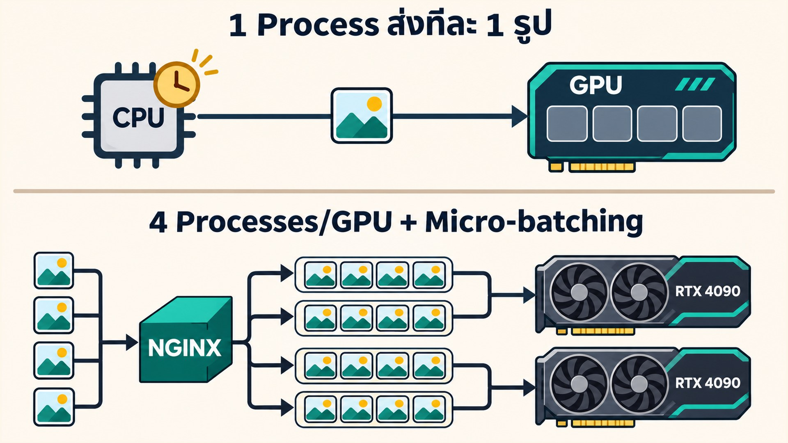
2× RTX 4090) เพื่อถอดรหัสภาพขนานบน 48 vCPU5 ms สูงสุด 32 รูปส่งเข้า GPU คราวเดียว ลดโอเวอร์เฮดต่อภาพleast_conn + Failover ON: ส่งงานให้ Process ที่ว่างที่สุดและย้ายคำขออัตโนมัติเมื่อ Process ล่มสถาปัตยกรรม Design #4: Next.js 15 ส่ง HTTP ขนาน 16 รูปตรงสู่ NGINX + 8× FastAPI บน 2× RTX 4090docs/DESIGN.md
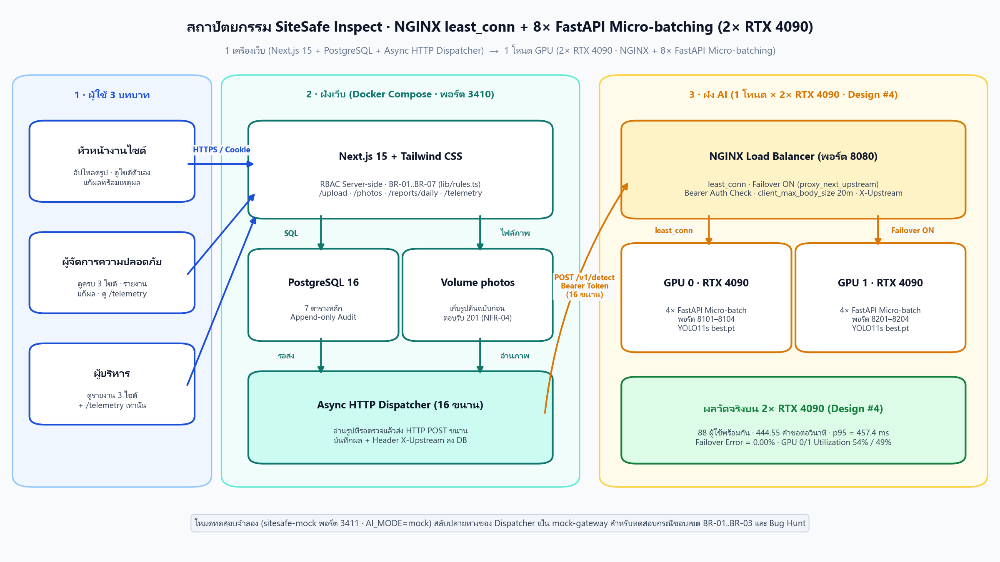
ฝั่งเว็บเก็บต้นฉบับลง Volume และ PostgreSQL ก่อนตอบรับ 201 แล้ว Async HTTP Dispatcher ส่งตรงไปยัง NGINX โดยไม่ต้องใช้โบรกเกอร์ข้อความภายนอก
วงจรสถานะ 4 ค่าของงานตรวจรูป: ปลายทาง DONE และ FAILED เปลี่ยนสถานะซ้ำไม่ได้docs/DESIGN.md
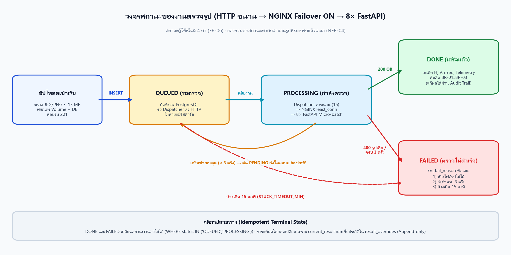
รูปที่ระบบรับแล้วทุกรูปต้องจบที่ DONE หรือ FAILED พร้อมเหตุผลชัดเจน และไม่หายแม้เบราว์เซอร์ปิดหรือ Process ล่มกลางทาง
ลำดับการไหลของคำขอ End-to-End ตั้งแต่หน้าอัปโหลดจนถึงรายงานประจำวันdocs/DESIGN.md
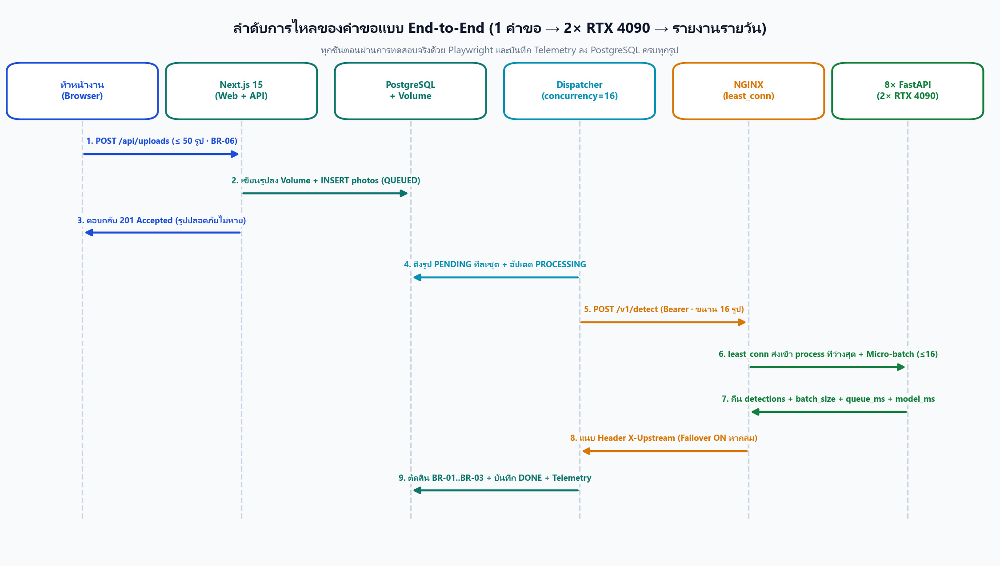
NGINX แนบ Header X-Upstream กลับมาพร้อมค่า batch_size, queue_ms (เวลารอรวมชุด) และ model_ms เพื่อบันทึกลง PostgreSQL ทุกรูป
พรอมต์ · พรอมต์ที่ 3 · ออกแบบ docs/DESIGN.md สถาปัตยกรรม 2 ฝั่งCopy & Paste
docs/DESIGN.md สถาปัตยกรรม 2 ฝั่ง (Direct Concurrent HTTP → NGINX + 8× FastAPI)พรอมต์ทั้งหมด 11 บรรทัดออกแบบระบบใน docs/DESIGN.md เพื่อตอบโจทย์ทั้งความถูกต้องของกติกาและความเร็วช่วงเร่งด่วน 150 รูปพร้อมกัน โดยแบ่งเป็น 2 ฝั่ง:
1. ฝั่งเว็บ (Docker Compose ภายในเครื่อง · พอร์ต 3410):
- Next.js 15 (App Router) + Tailwind CSS + PostgreSQL 16 (7 ตาราง + คอลัมน์บันทึก GPU Telemetry) + volume photos เก็บรูปต้นฉบับก่อนตอบรับ 201
- รวม Business Rule BR-01..BR-07 และสวิตช์ BUG_MODE ไว้ในไฟล์เดียว (web/lib/rules.ts)
- Async HTTP Dispatcher ส่งรูปขนาน concurrency=16 ผ่าน HTTP POST /v1/detect พร้อม Authorization: Bearer ไปยังฝั่ง GPU โดยตรง (ไม่ต้องใช้โบรกเกอร์ข้อความภายนอก)
- หน้าเว็บ 8 หน้า รวมหน้า /telemetry แสดงสถานะเครื่อง GPU, Header X-Upstream, batch_size และ model_ms
- รองรับโหมดจำลอง AI_MODE=mock (mock-gateway พอร์ต 3411) สำหรับทดสอบกรณีขอบเขตและ Bug Hunt
2. ฝั่ง AI (1 โหนด × 2× RTX 4090 บน Vast.ai):
- NGINX Load Balancer พอร์ต 8080 ใช้ least_conn + Passive Failover ON (proxy_next_upstream error timeout non_idempotent, max_fails=1 fail_timeout=10s) + client_max_body_size 20m + แนบ Header X-Upstream
- 8× FastAPI Micro-batching (4 Processes ต่อ GPU, พอร์ต 8101–8104 และ 8201–8204, MAX_BATCH=32, MAX_WAIT_MS=5) โหลดโมเดล YOLO11s (best.pt)
ระบุ ER Diagram, แผนภาพสถาปัตยกรรม, ลำดับคำขอ End-to-End, API Contract, และตาราง data-testid สำหรับ Playwright ให้ครบวางแผนงานขนาน 10 บล็อกด้วย DAG และเกณฑ์ Review ชัดเจน
แผนงาน DAG 10 บล็อก: สายวิกฤตคือ B01 → B02 → B03 → B08 → B10 ทำงานขนานสูงสุด 3 งานplan/PLAN.md
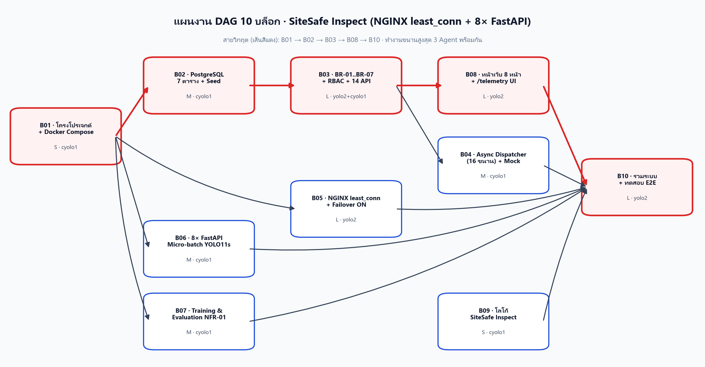
แยกงานฝั่งเว็บ (PostgreSQL, Business Rules, หน้าเว็บ 8 หน้า) ขนานกับฝั่ง AI (NGINX least_conn, 8× FastAPI Micro-batching, Evaluation)
Gantt แผนเวลา: ประมาณการรวม 112.5 นาที และคุมบล็อก B03 (Review) ให้จบภายใน 3 รอบplan/PLAN.md
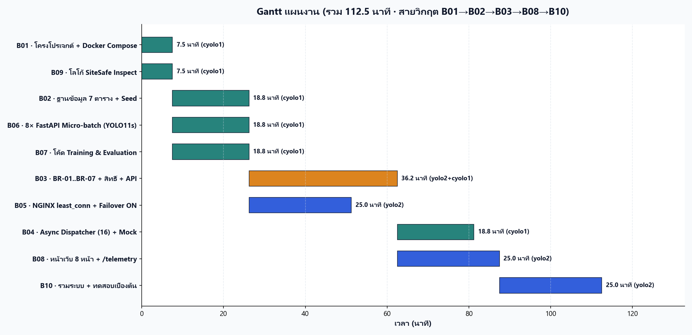
กำหนดขอบเขตการตรวจของบล็อก B03 ให้ผ่านทันทีเมื่อกรณีขอบเขตใน docs/TEST-DATA.md ผ่านครบโดยไม่ขยายขอบเขตเกิน Requirement
Gantt เวลาทำงานจริง: เสร็จสมบูรณ์ครบ 10/10 บล็อก ใช้โทเคนรวม 2,499,966 โทเคนplan/REPORT.md
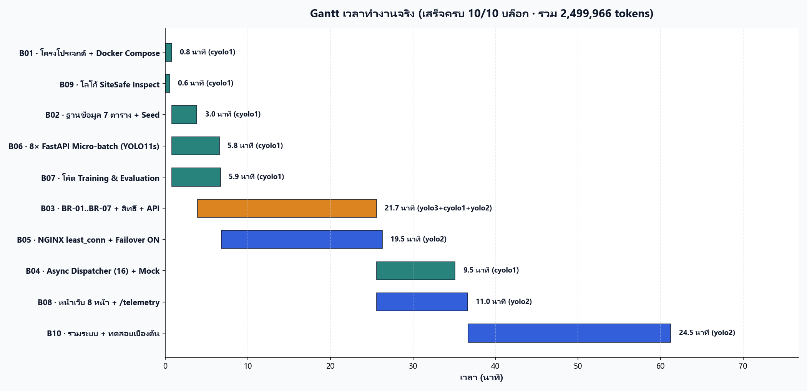
การทำงานขนานช่วยย่นเวลาสร้างจริงลงอย่างชัดเจน และได้ซอร์สโค้ดครบทั้งฝั่งเว็บ Docker Compose และฝั่ง AI บน 2× RTX 4090
พรอมต์ · พรอมต์ที่ 4 · วางแผนงาน DAG 10 บล็อกใน plan/PLAN.mdCopy & Paste
plan/PLAN.md, plan/dag.png และ plan/gantt-plan.pngพรอมต์ทั้งหมด 4 บรรทัดอ่าน docs/REQUIREMENTS.md, docs/DESIGN.md และ docs/TEST-DATA.md แล้ววางแผนสร้างระบบ SiteSafe Inspect แบบขนานด้วยบัญชี yolo2, yolo3, cyolo1 (พร้อมกันสูงสุด 3 งาน):
1. แตกงานเป็น 10 บล็อก (B01 โครงโปรเจกต์ + Docker Compose, B02 ฐานข้อมูล 7 ตาราง + Seed, B03 กติกา BR-01..BR-07 + RBAC + 14 API, B04 Async HTTP Dispatcher + Mock, B05 NGINX least_conn + Failover ON, B06 8× FastAPI Micro-batch YOLO11s, B07 โค้ด Training & Evaluation, B08 หน้าเว็บ 8 หน้า + /telemetry, B09 โลโก้, B10 รวมระบบและทดสอบเบื้องต้น)
2. กำหนดให้บล็อก B03 เป็นงานแบบ review (ทำและตรวจคนละบัญชี) โดยตั้งขอบเขตการตรวจให้ชัดเจน: ผ่านทันทีเมื่อ unit test และกรณีขอบเขตทั้งหมดใน docs/TEST-DATA.md ผ่านครบโดยไม่ขยายขอบเขตเกิน Requirement เพื่อให้จบภายใน ≤ 3 รอบ
3. สร้าง plan/PLAN.md ระบุสายวิกฤต ตารางแจกงาน และวาดแผนภาพ plan/dag.png กับ plan/gantt-plan.pngสร้างแอป เทรนโมเดล YOLO11s และพิสูจน์สมรรถนะบน 2× RTX 4090
พรอมต์ · พรอมต์ที่ 5 · สั่งทีม Agent สร้างซอร์สโค้ดครบ 10 บล็อกCopy & Paste
ดำเนินการสร้างระบบ SiteSafe Inspect ตามแผน plan/PLAN.md ครบทั้ง 10 บล็อก โดยใช้บัญชี yolo2, yolo3, cyolo1:
- ฝั่งเว็บ (code_reference/app/web/): Next.js 15 + Tailwind CSS + PostgreSQL 16 + lib/rules.ts (BR-01..BR-07 + BUG_MODE ไฟล์เดียว) + RBAC 3 บทบาทตรวจฝั่งเซิร์ฟเวอร์ + Async HTTP Dispatcher ส่งขนาน 16 รูป + หน้า /telemetry + mock-gateway
- ฝั่ง AI (code_reference/app/ai/serving/): server.py (FastAPI + YOLO11s Dynamic Micro-batching), nginx.conf (least_conn + Failover ON + Bearer auth check + X-Upstream), cluster.sh, loadgen.py และ ai/train/evaluate.py
- รัน npm run typecheck, npm run build, vitest (web) และ pytest (ai/train) ให้ผ่านครบทุกข้อ พร้อมสรุปเวลาและโทเคนจริงใน plan/REPORT.md และ plan/gantt-actual.pngซอร์สโค้ดทั้งฝั่งเว็บและฝั่ง AI ผ่าน Build และ Unit Test ครบก่อนเช่าเครื่อง GPUcode_reference/app/TEST.md
พรอมต์ · พรอมต์ที่ 6 · เช่าเครื่อง 2× RTX 4090 และวัดความแม่นยำโมเดล YOLO11sCopy & Paste
2× RTX 4090 บน Vast.ai และวัดความแม่นยำโมเดล YOLO11sพรอมต์ทั้งหมด 4 บรรทัดค้นหาและเช่าเครื่อง 1 โหนด × 2× RTX 4090 บน Vast.ai ที่ผ่านการยืนยัน (verified=true, inet_down >= 1200 Mbps, เลือกค่าดาวน์โหลดต่ำสุด, เปิดพอร์ต 8080, ติดป้าย label e2e-sitesafe-nginx):
1. ตรวจสอบสเปกเครื่องจริง (2× RTX 4090, vCPU, RAM, สถานะ RUNNING) และอัปโหลดโค้ดฝั่ง AI กับโมเดล YOLO11s (best.pt)
2. ตรวจความแม่นยำโมเดลด้วย ai/train/evaluate.py เทียบก่อน-หลังเทรน และเลือก Confidence Threshold บน Validation Set ให้ได้ Recall ≥ 0.80 และ Precision ≥ 0.80 สำหรับทั้ง NO_HARDHAT และ NO_VEST
3. บันทึกผลประเมินลง results/model/metrics_before.json, results/model/metrics_after.json และ results/model/threshold.jsonสถานะเครื่อง Vast.ai พร้อมใช้งาน (RUNNING): 8 Processes + NGINX เปิดพอร์ต 8080 ครบVast.ai Console · 2× RTX 4090
ตัวอย่างภาพชุดข้อมูล PPE ที่ใช้เทรนและทดสอบโมเดล YOLO11sresults/dataset_samples.jpg

ครอบคลุมมุมกล้องหน้างานก่อสร้างหลากหลายระยะ ทั้งคนงานสวมอุปกรณ์ครบและไม่สวมหมวก/เสื้อสะท้อนแสง
กราฟผลการเทรน YOLO11s ครบ 30 Epochs (534.7 วินาที): Loss ลดลงสม่ำเสมอและ mAP สูงขึ้นต่อเนื่องresults/model/train_time.json
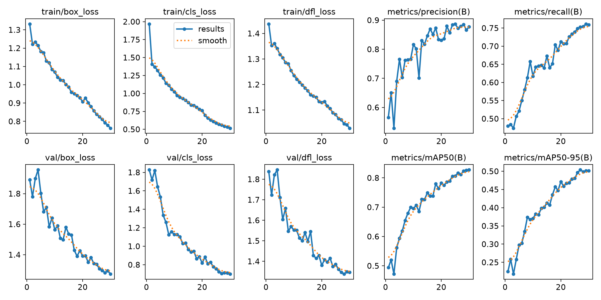
น้ำหนักโมเดลที่บันทึกไว้ (results/model/best.pt ขนาด 19.2 MB) ถูกนำไปใช้งานจริงบนทั้ง 8 Processes ของ 2× RTX 4090
ผลประเมินโมเดล YOLO11s ที่ threshold 0.32: ค่าที่วัดได้ถึงเกณฑ์ ≥ 0.80 ครบทั้ง 2 คลาสresults/model/metrics_after.json
| รุ่นโมเดล | NO_HARDHAT Recall | NO_HARDHAT Precision | NO_VEST Recall | NO_VEST Precision | ผลการประเมิน |
|---|---|---|---|---|---|
ก่อนเทรน (yolo11s COCO pretrained) | 0.000 | 0.000 | 0.000 | 0.000 | ไม่มีคลาส PPE · ไม่ผ่าน |
หลังเทรน (ppe-yolo-v1 · best.pt, conf = 0.32) | 0.800 (20/25) | 0.952 (20/21) | 0.861 (31/36) | 1.000 (31/31) | ค่าที่วัดได้ถึงเกณฑ์ ≥ 0.80 ทุกคลาส (แจ้งหมายเหตุขนาด Test Set 82 รูป) |
ตัวอย่างกรอบทำนายจริงของโมเดล ppe-yolo-v1 (best.pt) บนภาพชุดทดสอบresults/model/examples_test_predictions.jpg
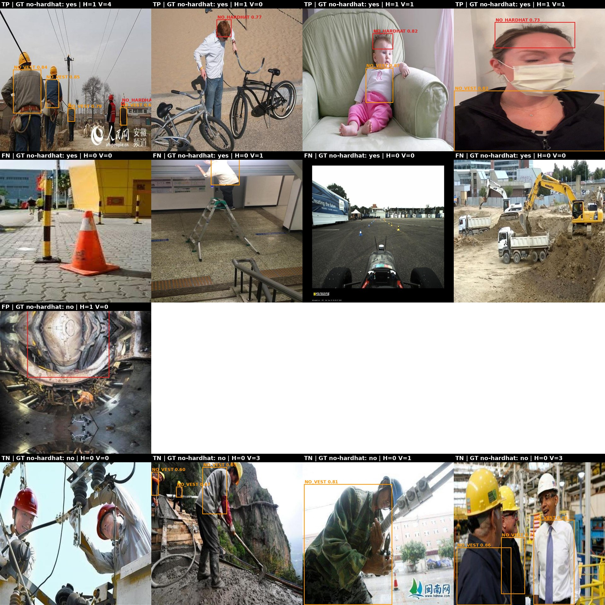
โมเดลตีกรอบแยกคนงานที่สวมอุปกรณ์และไม่สวมอุปกรณ์ (NO-Hardhat, NO-Safety Vest) ได้แม่นยำพร้อมคะแนนความมั่นใจ
พรอมต์ · พรอมต์ที่ 7 · วัดสมรรถนะ 4 รูปแบบ, ทดสอบ GPU ช้า & Failover และเปิด Design #4Copy & Paste
บนเครื่อง 1 โหนด × 2× RTX 4090 ให้รันชุดทดสอบความจุและเสถียรภาพด้วย cluster.sh และ loadgen.py (เกณฑ์ p95 ≤ 500 ms):
1. วัดความจุเปรียบเทียบ 4 รูปแบบ:
- Design #1: 1 GPU · 1 Process · Single
- Design #2: 1 GPU · 1 Process · Micro-batch
- Design #3: 1 GPU · 4 Processes · Micro-batch
- Design #4: 2× RTX 4090 · 8 Processes (4/GPU) · Micro-batch · NGINX least_conn
2. ทดสอบสถานการณ์ GPU 1 ช้าลง 3 เท่า (slow-factor 3) เปรียบเทียบ Round Robin กับ least_conn
3. ทดสอบสถานการณ์ปิด GPU 1 กะทันหันกลางโหลด 80 ผู้ใช้ เปรียบเทียบ Failover OFF กับ Failover ON
4. บันทึกผล JSON ลง results/lb/ สร้างกราฟ 4 แผ่นใน images/lab/ แล้วเปิด Design #4 (--gpus 2 --per-gpu 4 --mode micro --lb lc --failover on) เชื่อมต่อกับเว็บ Docker Compose (sitesafe-nginx พอร์ต 3410) และเปิด sitesafe-mock (พอร์ต 3411) คู่กันผลวัดจริงบน 1 โหนด × 2× RTX 4090: Design #4 รองรับ 88 ผู้ใช้พร้อมกัน (8.0×) และ 444.55 คำขอต่อวินาทีresults/lb/summary.json
| รูปแบบสถาปัตยกรรม | จำนวน GPU / Process | โหมด | ความจุ (ผู้ใช้พร้อมกัน) | ปริมาณงาน (คำขอต่อวินาที) | ความหน่วง p95 | การใช้ GPU 0 / GPU 1 | เทียบฐาน |
|---|---|---|---|---|---|---|---|
Design #1 (base) | 1 GPU · 1 Process | Single | 11 | 54.73 | 447.5 ms | 8% / 0% | 1.0× |
Design #2 (batch) | 1 GPU · 1 Process | Micro-batch | 32 | 121.27 | 481.3 ms | 19% / 0% | 2.9× |
Design #3 (multi) | 1 GPU · 4 Processes | Micro-batch | 64 | 288.55 | 412.8 ms | 45% / 0% | 5.8× |
Design #4 (gpu2_lc · ชุดใช้งานจริง) | 2× RTX 4090 · 8 Processes | Micro-batch + least_conn | 88 | 444.55 | 457.4 ms | 54% / 49% | 8.0× |
เทียบความจุ 4 รูปแบบ: จาก 11 → 32 → 64 → 88 ผู้ใช้พร้อมกัน (เพิ่มขึ้น 8.0 เท่า)results/lb/summary.json
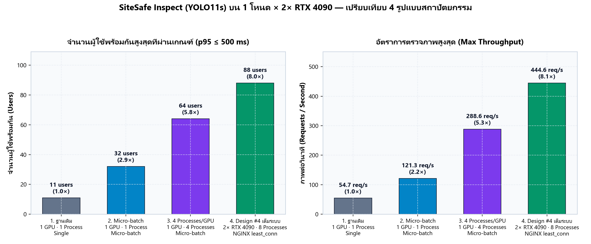
ดูการกระโดดของความจุทุกขั้น: Micro-batching (2.9×) → เพิ่มเป็น 4 Processes/GPU (5.8×) → ขยาย 2× RTX 4090 + NGINX least_conn (8.0×)
เส้นโค้งความหน่วงและปริมาณงาน: Design #4 คง p95 ต่ำกว่า 500 ms ได้จนถึง 88 ผู้ใช้พร้อมกันresults/lb/gpu2_lc.json
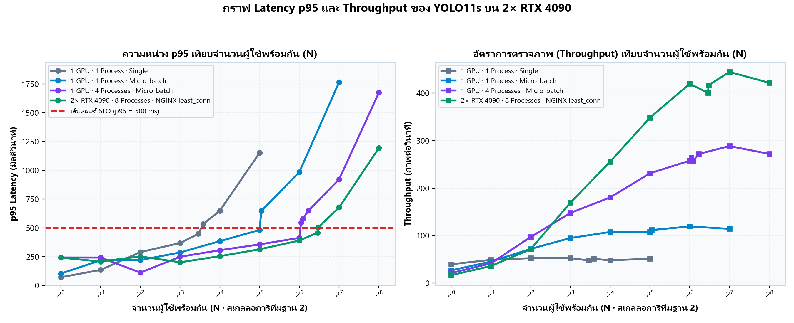
เมื่อเพิ่มจำนวนผู้ใช้พร้อมกัน Design #4 ทำปริมาณงานได้สูงสุด 444.55 คำขอต่อวินาทีโดยความหน่วงยังผ่านเกณฑ์ SLO
เมื่อ GPU 1 ช้าลง 3 เท่า: NGINX least_conn รักษาความจุได้ 76 ผู้ใช้ สูงกว่า Round Robin +76.7%results/lb/lc_slow.json · rr_slow.json
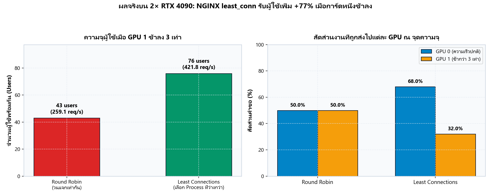
Round Robin แจกงาน 50%/50% ทำให้ค้างที่การ์ดจอช้า (43 ผู้ใช้) ส่วน least_conn โยกโหลดไป GPU 0 ทันทีเป็น 68%/32% (76 ผู้ใช้)
เมื่อปิด GPU 1 กะทันหันกลางโหลด 80 ผู้ใช้: Failover ON ลดความผิดพลาดจาก 67.18% เหลือ 0.00%results/lb/fail_on.json · fail_off.json
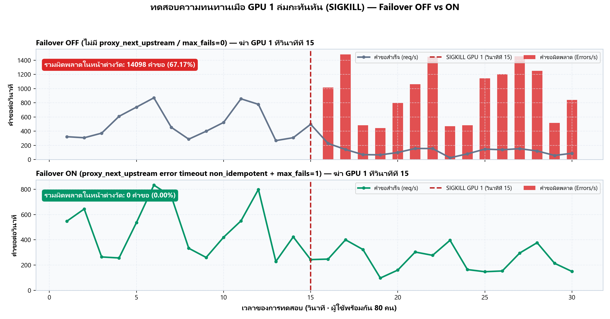
Failover OFF เกิด 502 จำนวน 14,098 คำขอ (67.18%) ขณะที่ Failover ON ใช้ proxy_next_upstream ย้ายไป GPU 0 ได้ครบโดยผิดพลาด 0 คำขอ
บัญชีทดลองใช้งานหน้าเว็บ (Demo Login Accounts): ทดลองสลับครบทั้ง 3 บทบาทได้ทันทีdocs/TEST-DATA.md
| บทบาท (Role) | อีเมล (Email) | รหัสผ่าน (Password) | ไซต์ | ฟีเจอร์และเส้นทางที่ทดลองได้ |
|---|---|---|---|---|
| หัวหน้างานไซต์ (Supervisor) | sup.a@sitesafe.test | Test-SupA-01 | SITE-A | อัปโหลดรูปเป็นชุด (/upload), ดูกรอบ PPE ของไซต์ ก, แก้ผลพร้อมเหตุผล, ดูรายงานไซต์ ก, ดู /telemetry |
| หัวหน้างานไซต์ (Supervisor) | sup.b@sitesafe.test | Test-SupB-01 | SITE-B | ทดสอบการแยกข้อมูลข้ามไซต์ (เปิดรูป SITE-A จะถูกปฏิเสธ 404) |
| หัวหน้างานไซต์ (Supervisor) | sup.c@sitesafe.test | Test-SupC-01 | SITE-C | อัปโหลดและดูข้อมูลเฉพาะ SITE-C |
| ผู้จัดการความปลอดภัย (Safety Manager) | manager@sitesafe.test | Test-Manager-01 | ทุกไซต์ | ดูรูปครบ 3 ไซต์ (/photos, /photos/problems), แก้ผลตรวจพร้อม Audit Trail, ดูรายงาน 3 ไซต์ (/reports/daily), ดู /telemetry (ไม่มีสิทธิ์อัปโหลด) |
| ผู้บริหาร (Executive) | exec@sitesafe.test | Test-Exec-01 | ทุกไซต์ | ดูรายงานประจำวัน 3 ไซต์ (/reports/daily) และแดชบอร์ด /telemetry เท่านั้น (ซ่อนเมนูอัปโหลดและรูปภาพ) |
เดโมใช้งานจริง 1: เริ่มจากหน้า /login → อัปโหลด 6 รูป → กรอบ PPE บน 2× RTX 4090 → รายงานLive 2× RTX 4090 Demo GIF
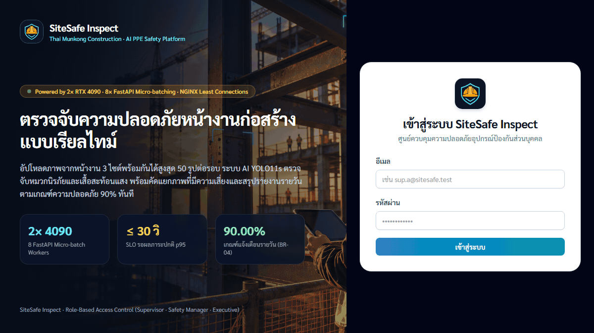
แสดงการพิมพ์อีเมลและรหัสผ่านจริงบนหน้า /login, อัปโหลดภาพหน้างานจริง, แสดงกรอบตรวจจับพร้อมป้าย GPU/model_ms และเปิดรายงานประจำวัน
เดโมใช้งานจริง 2: อัปโหลด 20 รูปพร้อมกัน → หน้ารูปมีปัญหา → รายงาน <90% แดง → /telemetryLive 2× RTX 4090 Demo GIF
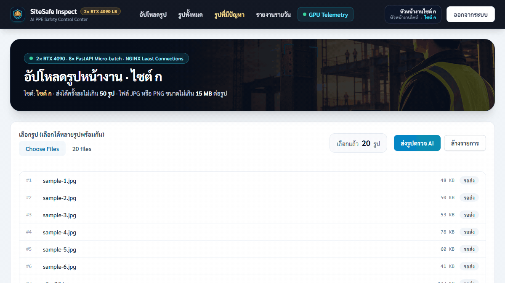
สลับบทบาทจากหัวหน้างานเป็นผู้จัดการความปลอดภัย ตรวจหน้ารูปมีปัญหา รายงานไซต์ ก สีแดง (89.67%) และแดชบอร์ด /telemetry สถานะ ONLINE
หน้าจอใช้งานจริงฝั่งหัวหน้างาน: หน้าอัปโหลดผูกไซต์อัตโนมัติ และหน้าดูกรอบ PPE พร้อม GPU TelemetryLive Web UI
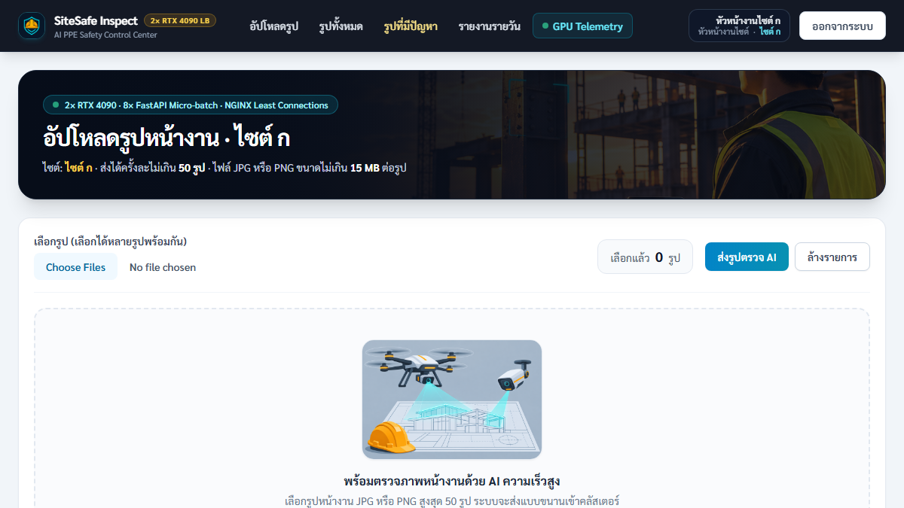
/upload: ผูก SITE-A อัตโนมัติ ไม่มีช่องเลือกไซต์อื่น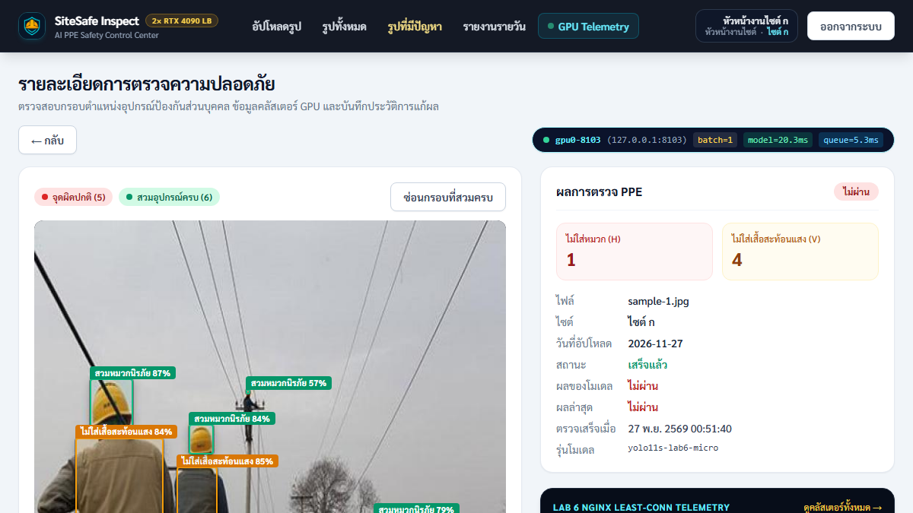
/photos/[id]: วาดกรอบ PPE ทับภาพต้นฉบับพร้อม X-Upstream และ model_msหน้าจอใช้งานจริงฝั่งผู้จัดการและผู้บริหาร: รายงานเส้นแบ่ง 90% และแดชบอร์ด /telemetryLive Web UI
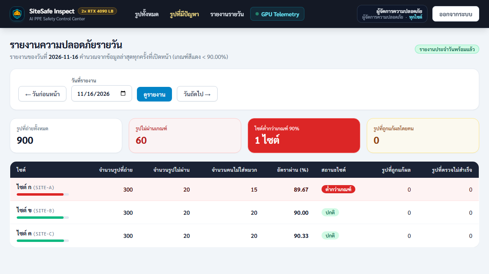
/reports/daily: SITE-A 89.67% ขึ้นสีแดง · SITE-B 90.00% ปกติ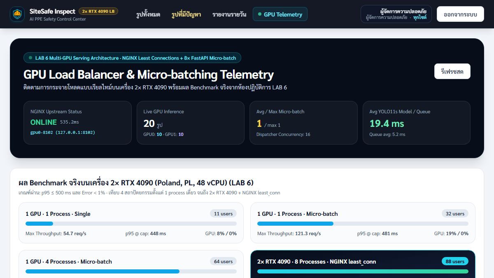
/telemetry: แสดงสถานะ Upstream ONLINE และสัดส่วนการกระจายงาน 2× RTX 4090ทดสอบอัตโนมัติ Playwright 27 ข้อพร้อม .gif ทุกข้อ และ Bug Hunt 3/3
พรอมต์ · พรอมต์ที่ 8 · รัน Playwright 24 Core Test Cases พร้อมบันทึก .gif ทุกข้อCopy & Paste
.gif รายข้อ + เดโมหน้าเว็บพรอมต์ทั้งหมด 7 บรรทัดออกแบบและรันชุดทดสอบ Playwright (test/e2e/tests/) ครบ 24 Core Test Cases (TC-01 ถึง TC-24) ครอบคลุมทุก Requirement และ Business Rule:
- กลุ่ม A (TC-01..06): ตรวจขนาดไฟล์ 14.9/15.0/15.1 MB (BR-05), ชนิดไฟล์จริงด้วย Magic Bytes (FR-02), จำนวน 0/50/51 รูป (BR-06), การผูกไซต์อัตโนมัติ (FR-04)
- กลุ่ม B (TC-07..12): Decision Table 8 กรณี R-1..R-8 (BR-01..03), วาดกรอบ SVG, ตรวจภาพหน้างานจริง 6 รูปด้วย YOLO11s บน 2× RTX 4090, กรองหน้ารูปมีปัญหาและรูปทั้งหมด
- กลุ่ม C (TC-13..17): ปิดเบราว์เซอร์กลางทาง 10 รูปไม่หาย, ไฟล์ใหญ่ 15 MB ตรวจผ่าน NGINX, ไฟล์เสียไม่ขวางภาพปกติ, ชุด 20 รูปพร้อมกันเช็ก p95 ≤ 30 วิ และกระจายข้ามทั้ง gpu0 และ gpu1, และ /api/health
- กลุ่ม D (TC-18..22): เส้นแบ่งสีแดง 89.67% vs 90.00% vs 90.33% (BR-04), ขอบเขตพิเศษวันที่ 2, ป้ายเวลา 17:59 vs 18:00 น. (BR-07), แก้ผลพร้อมเหตุผลและ Audit Trail (FR-13..16)
- กลุ่ม E (TC-23..24): แยกสิทธิ์ RBAC 3 บทบาท (401/403/404), แดชบอร์ด /telemetry ONLINE และตรวจไม่รั่ว API Key
ทุก Test Case ต้องบันทึกวิดีโอหลักฐาน .gif ของตัวเองที่ images/tests/TC-XX.gif พร้อมบันทึกวิดีโอเดโมหน้าเว็บเริ่มตั้งแต่หน้า /login และสร้าง test/TEST-REPORT.md กับ test/index.htmlสรุปผลทดสอบ Playwright: ผ่านครบ 24/24 ข้อ จับบัก Bug Hunt ครบ 3/3 และบันทึก .gif ครบ 27 ไฟล์test/TEST-REPORT.md
ตารางผลทดสอบ Playwright (ชุดที่ 1 · TC-01 ถึง TC-12): Upload, Rules และ Live YOLO11stest/evidence/e2e_results.json
| TC ID | ชื่อ Test Case | กติกา | โหมด | ผลจริง | สถานะ |
|---|---|---|---|---|---|
| TC-01 | รับไฟล์ขนาด 14.9 MB และ 15.0 MB พอดี | BR-05 | Live GPU | HTTP 201, 201 | ✓ ผ่าน |
| TC-02 | ปฏิเสธไฟล์เกิน 15 MB (+1 B และ 15.1 MB) | BR-05 | Live GPU | HTTP 413, 413 | ✓ ผ่าน |
| TC-03 | รับเฉพาะ JPG และ PNG แท้ (ตรวจ Magic Bytes) | FR-02 | Live GPU | รับครบ 2/2 (JPG + PNG) | ✓ ผ่าน |
| TC-04 | ปฏิเสธ GIF, PDF และไฟล์ text ปลอมนามสกุล .jpg | FR-02 | Live GPU | HTTP 415, 415, 415 | ✓ ผ่าน |
| TC-05 | ขอบเขตจำนวนรูปต่อครั้ง (0, 50, 51 รูป) | BR-06 | Live GPU | 422 · 201 · 422 | ✓ ผ่าน |
| TC-06 | หน้า /upload ผูกไซต์ตามบัญชีหัวหน้างานอัตโนมัติ | FR-04 | Live GPU | SITE-A · select=0 | ✓ ผ่าน |
| TC-07 | Decision Table ครบ 8 กรณี R-1..R-8 (รวม H=0, V=2) | BR-01..03 | Mock | 8/8 ตรงครบทุกกรณี | ✓ ผ่าน |
| TC-08 | หน้า PhotoDetail วาดกรอบ Bounding Boxes ครบตาม H+V | FR-07, FR-08 | Mock | H=1, V=1, 2 กรอบ, FAIL | ✓ ผ่าน |
| TC-09 | Live 2× RTX 4090 YOLO11s ตรวจภาพหน้างานจริง 6 รูป + วาดกรอบ | FR-07, NFR-01 | Live GPU | 6/6 DONE (gpu0-8103, model=26.38ms) | ✓ ผ่าน |
| TC-10 | หน้า /photos/problems แสดงเฉพาะรูป FAIL และ WARN | FR-11 | Live GPU | รวม 31 (FAIL=20, WARN=11) | ✓ ผ่าน |
| TC-11 | หน้า /photos กรองตามวันที่ ไซต์ และผลตรวจ (WARN) | FR-12 | Live GPU | photos-total-count = 11 | ✓ ผ่าน |
| TC-12 | API /api/photos/{id} คืนกรอบ PPE และ GPU Telemetry ครบ | FR-07 | Live GPU | gpu0-8102 (127.0.0.1:8102) | ✓ ผ่าน |
ตารางผลทดสอบ Playwright (ชุดที่ 2 · TC-13 ถึง TC-24): Reliability, 2× GPU LB, Reports และ RBACtest/evidence/e2e_results.json
| TC ID | ชื่อ Test Case | กติกา | โหมด | ผลจริง | สถานะ |
|---|---|---|---|---|---|
| TC-13 | ปิดหน้าเบราว์เซอร์กลางทาง 10 รูปยังตรวจจบครบ 10/10 | FR-05, NFR-04 | Live GPU | done=10, failed=0 | ✓ ผ่าน |
| TC-14 | ไฟล์ใหญ่ 14.9 MB และ 15.0 MB ตรวจจบครบผ่าน NGINX | BR-05, NFR-04 | Live GPU | done=2 ใน 2.5 วินาที | ✓ ผ่าน |
| TC-15 | ไฟล์เสีย corrupt_half.jpg จบ FAILED โดยไม่ขวางภาพปกติ | FR-06, NFR-04 | Live GPU | done=2, failed=1 (เปิดไฟล์รูปไม่ได้) | ✓ ผ่าน |
| TC-16 | ส่ง 20 รูปพร้อมกัน p95 ≤ 30 วิ และกระจายข้ามทั้ง 2× RTX 4090 | NFR-02, NFR-03 | Live GPU | 20/20 ใน 2.69s · p95=2.23s · gpu0=7, gpu1=13 | ✓ ผ่าน |
| TC-17 | GET /api/health รายงาน db, storage, dispatcher, gateway = ok | NFR-04 | Live GPU | status=ok, db=ok, dispatcher=ok, gateway=ok | ✓ ผ่าน |
| TC-18 | BR-04 เส้นแบ่งสีแดง 89.67% แดง · 90.00% และ 90.33% ปกติ | BR-04 | Live GPU | 89.67%(แดง) · 90.00%(ปกติ) · 90.33%(ปกติ) | ✓ ผ่าน |
| TC-19 | ขอบเขตพิเศษรายงาน (ไม่มีข้อมูล / 9÷10 / ตัด FAILED ออก) | FR-15, BR-04 | Live GPU | ตรงครบทั้ง 3 ไซต์ | ✓ ผ่าน |
| TC-20 | BR-07 ป้ายความพร้อมรายงาน 17:59 น. vs 18:00 น. | BR-07 | Live GPU | data-ready=false → true ตรงเวลา | ✓ ผ่าน |
| TC-21 | แก้ผล FAIL → PASS เปลี่ยนไซต์ ก จาก 89.67% (แดง) เป็น 90.00% (ปกติ) | FR-13, FR-14, NFR-07 | Live GPU | 90.00% ไม่แดง · edited=1 | ✓ ผ่าน |
| TC-22 | ปฏิเสธเหตุผลว่าง (422) + Audit History + ปุ่มเลื่อนวันรายงาน | FR-13, FR-16 | Live GPU | 422 · 201 · 2026-11-17→16 | ✓ ผ่าน |
| TC-23 | แยกสิทธิ์ RBAC ครบ 3 บทบาท (401/403/404) + UI Login | FR-18..22, NFR-06 | Live GPU | 401 · 404 · 403 · UI Executive ซ่อนเมนูครบ | ✓ ผ่าน |
| TC-24 | แดชบอร์ด /telemetry ONLINE (2× RTX 4090) + ไม่รั่ว API Key | NFR-05 | Live GPU | ONLINE (gpu0-8103) · 3/3 บทบาทเข้าได้ · 0 รั่วไหล | ✓ ผ่าน |
หลักฐาน GIF กลุ่ม A · การรับไฟล์และตรวจขอบเขต (BR-05, FR-02, BR-06)TC-01 · TC-02 · TC-04 · TC-05

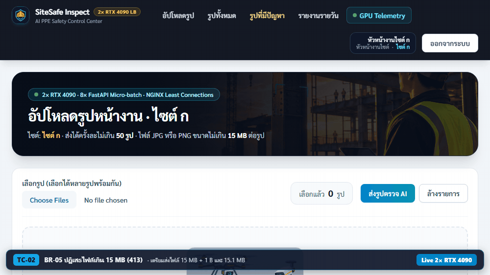
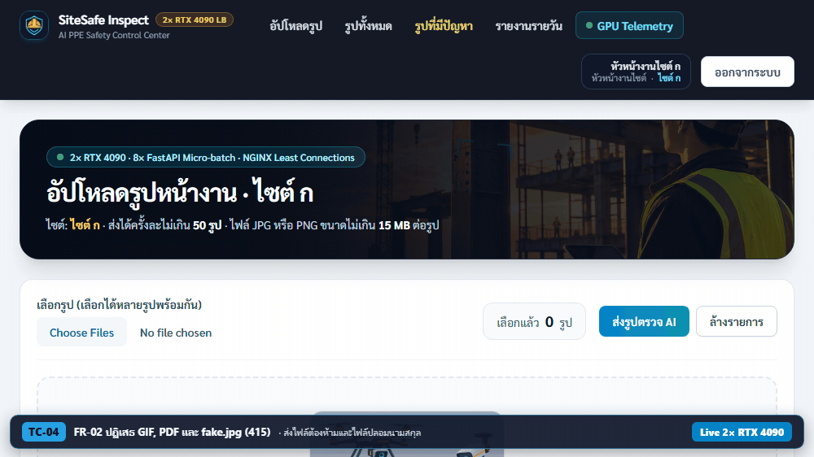
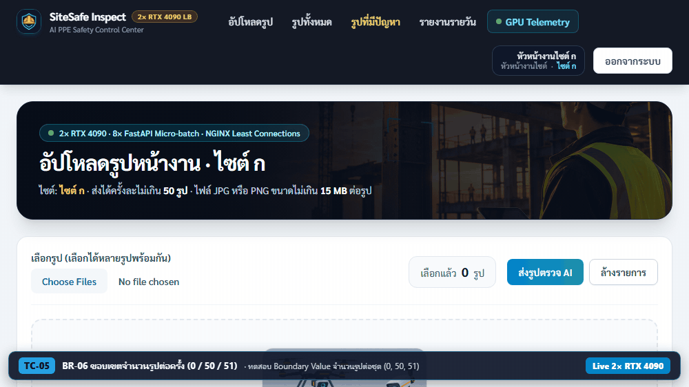
หลักฐาน GIF กลุ่ม B · ตารางตัดสิน BR-01..03 และ YOLO11s จริงบน 2× RTX 4090TC-07 · TC-08 · TC-09
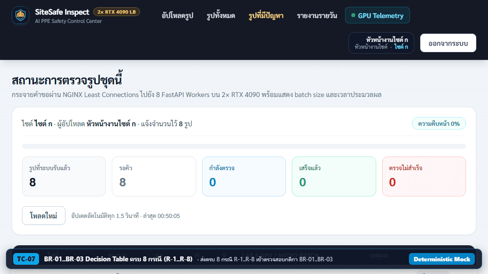


หลักฐาน GIF กลุ่ม C · ความทนทาน รูปห้ามหาย และการกระจายงานข้าม 2× RTX 4090TC-13 · TC-14 · TC-15 · TC-16
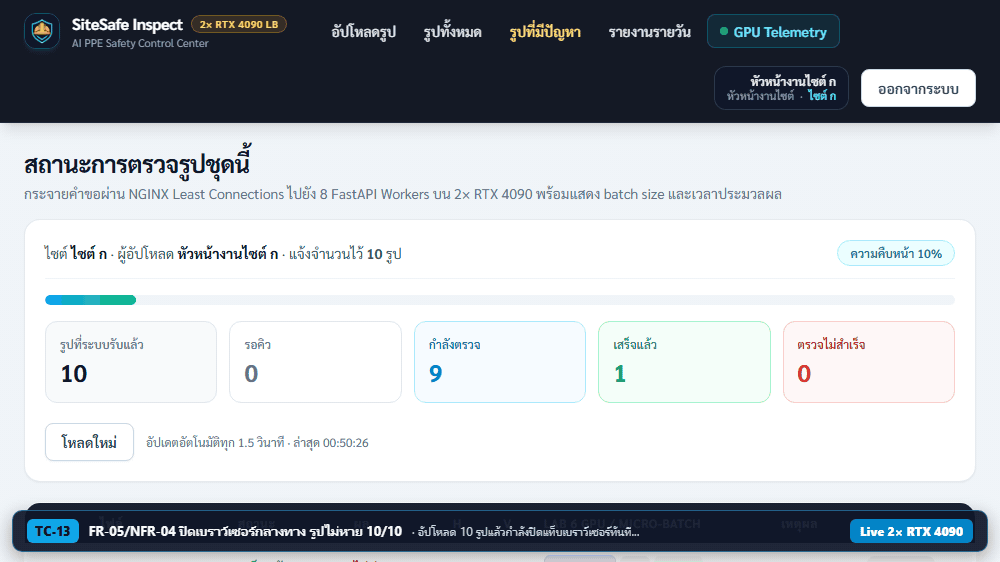

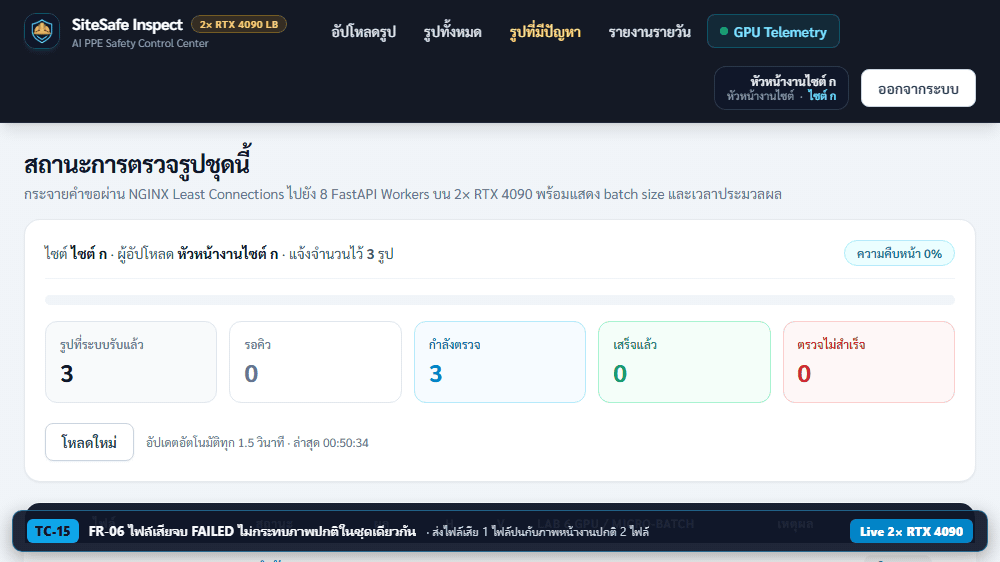

หลักฐาน GIF กลุ่ม D1 · เส้นแบ่งรายงาน 90.00% และป้ายเวลาความพร้อม 18:00 น.TC-18 · TC-19 · TC-20
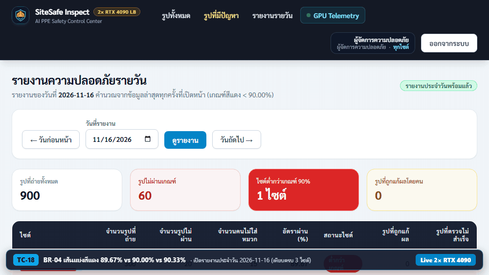

หลักฐาน GIF กลุ่ม D2 · หน้ารูปมีปัญหา การแก้ผลพร้อม Audit Trail และการเลื่อนวันTC-10 · TC-21 · TC-22


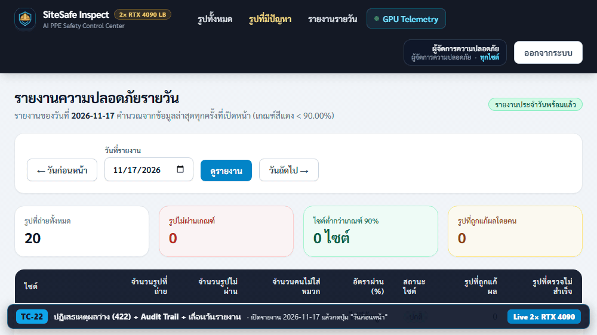
หลักฐาน GIF กลุ่ม E · การแยกสิทธิ์ RBAC 3 บทบาท และแดชบอร์ด /telemetry ปลอด API KeyTC-23 · TC-24
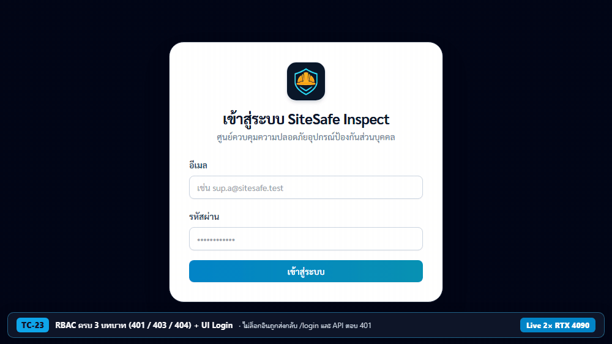

Bug Hunt (BUG_MODE=1): พิสูจน์ว่าชุดทดสอบจับบักที่ซ่อนอยู่ในกติกาได้จริงครบ 3/3
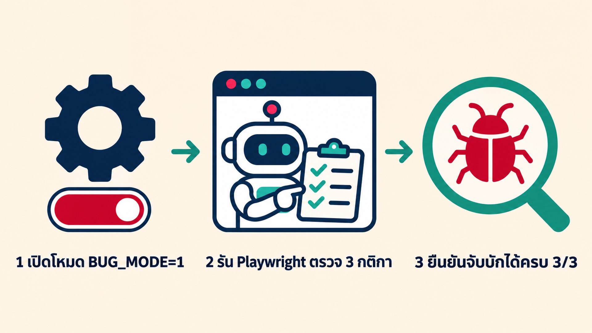
BUG_MODE=1: สวิตช์ที่อ่านเฉพาะใน web/lib/rules.ts ทำให้กติกา 3 ข้อ (BR-02, BR-04, BR-06) ทำงานผิดที่จุดขอบเขตTC-25–TC-27): ชุดทดสอบต้องตรวจพบความผิดพลาดครบทั้ง 3 ข้อ ไม่ใช่ปล่อยผ่านไปเงียบ ๆBUG_MODE=0 ทันที: หลังเก็บหลักฐาน .gif และภาพหน้าจอครบจึงปิดโหมดบักกลับสู่สถานะปกติพรอมต์ · พรอมต์ที่ 9 · รัน Bug Hunt (TC-25..TC-27) ในโหมด BUG_MODE=1Copy & Paste
TC-25–TC-27) ในโหมด BUG_MODE=1พรอมต์ทั้งหมด 5 บรรทัดเปิดโหมด BUG_MODE=1 บนสแต็ก sitesafe-mock (พอร์ต 3411) แล้วรัน test/e2e/tests/06_bughunt.spec.ts (TC-25 ถึง TC-27) เพื่อพิสูจน์ว่าชุดทดสอบจับความผิดพลาดของ Business Rule ที่ซ่อนไว้ได้ครบ 3/3:
- TC-25 (BR-02): ยืนยันตรวจพบว่า h0_v2.jpg ตอบ WARN แทน FAIL
- TC-26 (BR-04): ยืนยันตรวจพบว่า SITE-B ที่ได้ 90.00% พอดีถูกไฮไลต์สีแดง พร้อมถ่ายภาพหน้าจอ images/lab/web-bug-9000.png
- TC-27 (BR-06): ยืนยันตรวจพบว่าส่งชุด 51 รูปได้รับ 201 แทน 422
บันทึกไฟล์ .gif หลักฐานทั้ง 3 ข้อ (images/tests/TC-25.gif ถึง TC-27.gif) บันทึกผลลง test/BUG-HUNT.md แล้วคืนค่า BUG_MODE=0 ทันทีหลักฐาน GIF Bug Hunt (BUG_MODE=1): จับบักซ่อนได้ครบทั้ง 3 กติกา (3/3 · 100%)TC-25 · TC-26 · TC-27 (BUG_MODE=1)
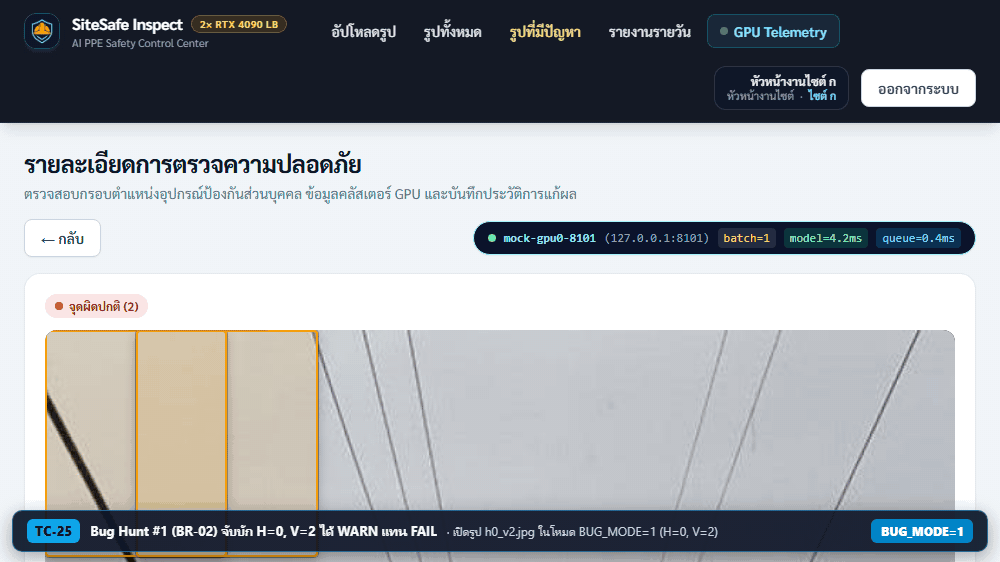

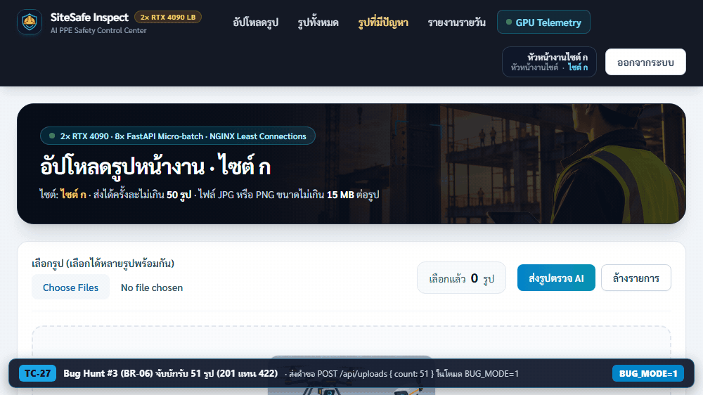
ภาพหน้าจอหลักฐาน Bug #2 (BR-04): เมื่อ BUG_MODE=1 ไซต์ ข ที่ได้ 90.00% พอดีกลายเป็นสีแดงผิดกติกาtest/BUG-HUNT.md
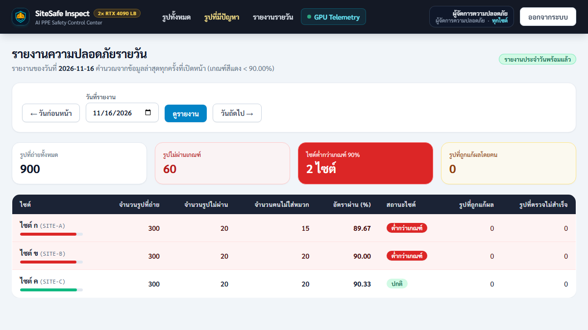
เปรียบเทียบกับภาพปกติ (BUG_MODE=0) ที่ SITE-B 90.00% ต้องไม่แดง · การทดสอบจุดขอบเขต 90.00% พอดีช่วยจับบักลักษณะนี้ได้ทันที
พรอมต์ · พรอมต์ที่ 10 · ลบเครื่อง GPU บน Vast.ai และออกเอกสารส่งมอบงานCopy & Paste
DELIVERY.mdพรอมต์ทั้งหมด 4 บรรทัดหลังจบการทดสอบทั้งหมดให้ดำเนินการปิดทรัพยากรและสรุปงานส่งมอบทันที:
1. ลบเครื่อง GPU ที่มี label e2e-sitesafe-nginx บน Vast.ai ด้วย vastai destroy instance <INSTANCE_ID> -y และตรวจสอบด้วย vastai show instances ว่าเหลือ 0 เครื่อง
2. ปิดคอนเทนเนอร์ทดสอบในเครื่อง (sitesafe-nginx และ sitesafe-mock) ด้วย docker compose down -v และลบไฟล์ชั่วคราวที่ไม่จำเป็น
3. ออกรายงานคำตัดสินส่งมอบใน DELIVERY.md สรุปผลความแม่นยำโมเดล ความจุบน 2× RTX 4090 ผลทดสอบ Playwright 24/24 + Bug Hunt 3/3 และข้อสังเกตโปร่งใสเรื่องขนาด Test Setยืนยันลบเครื่อง Vast.ai (DESTROYED): เหลือ 0 เครื่องและปิดคอนเทนเนอร์ทดสอบครบถ้วนVast.ai Cleanup Verified
คำตัดสินส่งมอบงาน: พร้อมส่งมอบพร้อมหลักฐานจริงและข้อสังเกตโปร่งใสครบถ้วนDELIVERY.md
บทเรียนวิศวกรรม 4 ข้อจากการสร้าง SiteSafe Inspect ตั้งแต่โจทย์จนถึงส่งมอบKey Takeaways
- 01เริ่มจากกติกาและกรณีขอบเขตก่อนเขียนโค้ด: การเขียน
docs/TEST-DATA.mdล่วงหน้าและรวมกติกาไว้ที่web/lib/rules.tsไฟล์เดียวทำให้การตรวจและแก้บักแม่นยำ - 02แก้คอขวดให้ตรงจุดด้วย Design #4: โมเดลขนาดเล็ก (19 MB) ติดคอขวด CPU/GIL การใช้ 4 Processes ต่อ GPU + Micro-batching + NGINX
least_connเพิ่มความจุได้ 8.0 เท่าโดยไม่ต้องเพิ่มโบรกเกอร์ซับซ้อน - 03วัดความทนทานด้วยสถานการณ์เสียจริง: ทดสอบทั้ง GPU ช้าลง 3 เท่า (
least_connชนะ +76.7%) และปิด GPU 1 กะทันหัน (Failover ONผิดพลาด 0.00%) - 04พิสูจน์คุณภาพชุดทดสอบด้วย Bug Hunt: ชุดทดสอบที่ดีต้องทั้งผ่าน 24/24 เมื่อโค้ดถูก และจับบักได้ 3/3 เมื่อเปิด
BUG_MODE=1พร้อมวิดีโอ.gifหลักฐานทุกข้อ